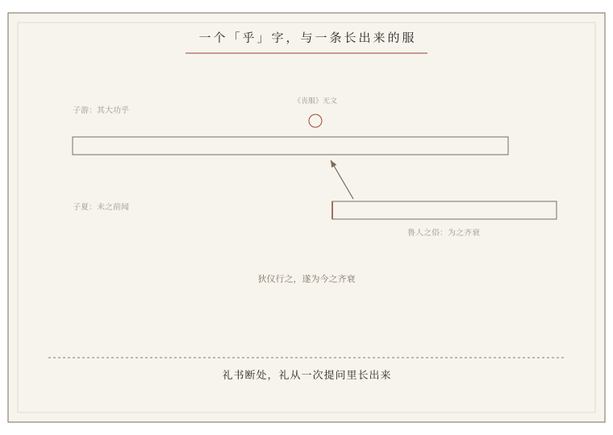

檀弓上 · 三·七十八 · 第 281 课
公叔木有同母異父之昆弟死，問於子游。子游曰：「其大功乎？」狄儀有同母異父之昆弟死，問於子夏，子夏曰：「我未之前聞也。魯人則為之齊衰。」狄儀行齊衰。今之齊衰，狄儀之問也。
说什么事：公叔木的同母异父兄弟死了，问子游该服什么；子游说：「大概大功吧？」狄仪的同母异父兄弟死了，问子夏；子夏说：「我从没听说过。鲁地的人是为他服齐衰的。」狄仪就服了齐衰。如今这个齐衰之服，是从狄仪这一问来的。
落在哪一层：礼制的空白处。论「无文之处，服从何起」。
为何编在此位：上节论解礼之失，此节论礼本无文。一讥「过解」，一记「无据」——皆见礼在不确定处。
【经】公叔木有同母異父之昆弟死，問於子游。子游曰：「其大功乎？」狄儀有同母異父之昆弟死，問於子夏，子夏曰：「我未之前聞也。魯人則為之齊衰。」狄儀行齊衰。今之齊衰，狄儀之問也。
【注】木當為朱，《春秋》作戌，衛公叔文子之子，定公十四年奔魯。疑所服也，親者屬大功是。
【疏】此一节论为同母异父昆弟死著服得失之事。案《世本》「卫献公生成子当，当生文子拔，拔生朱」，故知「木当为朱」也；言「《春秋》作戌」者，定十四年「卫公叔戌来奔」是也。同母异父昆弟之服，《丧服》无文，故子游疑之：「其大功乎？」「乎」是疑辞也。云「亲者属大功是」者，郑意以为同母兄弟，母之亲属服大功是也。所以是者，以同父同母则服期，今但同母而以母是我亲生，其兄弟是亲者血属，故降一等而服大功。案《圣证论》王肃难郑：「礼称亲者血属，谓出母之身，不谓出母之子服也。若出母之子服大功，则出母之父母服应更重，何以为出母之父母无服？」王肃云：「同母异父兄弟服大功者，谓继父服齐衰，其子降一等，故服大功。」马昭难王肃：「异父昆弟，恩继于母，不继于父，肃以为从继父而服，非也。」张融以为继父同居有子，正服齐衰三月，乃为其子大功，非服之差，互说是也。不云自狄仪始者，庾蔚云：「狄仪之前，鲁人先已行之，故不云自狄仪始也。」
公叔木 注「木当为朱」，《春秋》作「戌」。卫公叔文子之子，定公十四年奔鲁。
同母异父之昆弟 同母所生、父各不同之兄弟。
其大功乎 「乎」是疑辞——大概该大功吧。子游自己也不确定。
未之前闻 从前没有听说过。「未之前闻」即「未闻之前」。
鲁人则为齐衰 鲁地的人是为此服齐衰的。则，此处作「乃」「即」。
行齐衰 实行齐衰之服。齐衰重于大功。
今之齐衰，狄仪之问也 如今通行的这个齐衰，是从狄仪这一问开始的。
公叔木的同母异父兄弟死了，去问子游。子游说：「大概是大功吧？」狄仪的同母异父兄弟死了，去问子夏。子夏说：「我从没听说过这事。鲁地的人倒是为他服齐衰的。」狄仪就服了齐衰。如今通行的这个齐衰之服，就是从狄仪这一问来的。
此节并列两人、两问、两答，结果一个没成，一个成了。
子游的答案是「其大功乎」——一个「乎」字，承认自己也不确定。注说「疑所服也」，正是这个意思。这一答等于说：礼书上没有。
子夏的答案更实：「我未之前闻也，鲁人则为之齐衰。」——我也不知道，但鲁地的人是这样做的。他把「不知道」和「地方上的做法」一起交了出去。
结果：狄仪照鲁人的做法行了齐衰，而这套齐衰此后就成了通行的服制。经末一句点得极冷静：「今之齐衰，狄仪之问也。」
一句「不知道」加一句「本地这么做」，最后长成了一条礼制。
第一层 礼书的空白有多大 疏开头一句：「同母异父昆弟之服，《丧服》无文。」《丧服》是礼制最精密的文本，五服之等细到每一等、每一变，而这一种关系——同母异父的兄弟——竟不在其中。因为这种关系在当时是「出母改嫁」的产物，礼书成文的时代还未及处理。
第二层 子游的「乎」最有分量 两位都是孔门高弟，一位知礼，一位文学。子游答的是「其大功乎」，一个字把自己的不确定摆在明处。这不是推诿，是诚实的限度。礼家最难的一课，是知道自己到哪里为止。
第三层 子夏的「鲁人则为之」是什么做法 这不是回答，是移交。他把礼的问题移交给了地方的惯例。这一移交在当时是合法的，因为礼本来就有「从俗」的一面；但它也埋下了一个后果：地方惯例一旦被写进问答，就成了通则。
第四层 郑、王、马、张四家之争 疏把这场争论记得很细：郑玄以「亲者属」解为母之血属，故同母异父服大功；王肃驳以「母之父母尚且无服，其子岂可大功」，主张因继父而服；马昭驳王肃「恩继于母，不继于父」；张融持平，以为「继父同居有子，正服齐衰三月，乃为其子大功」。四家争的是一个「为什么」，而这个「为什么」，经文里根本没有。
这一层最见本节的深度：礼书无文处，后来者必得给一个理由；理由一多，就成了经学。
与今日何干 今人的制度与习俗里，也有大量「无文」之处——重组家庭的称谓与礼数、非血缘的赡养、同居关系的名分。此节给的态度是：先承认无文（子游之「乎」），再用现有做法（子夏之「鲁人」），最后承认这条做法是被一次具体的提问带出来的（「狄仪之问也」）。知道自己是从哪一问来的，才不会把它当作自古如此。
| 左 | 右 |
|---|---|
| 同母异父昆弟 | 《丧服》无文 |
| 子游曰「其大功乎」 | 疑辞，承认不知 |
| 子夏曰「未之前闻」 | 不知 |
| 鲁人则为之齐衰 | 地方之俗 |
| 狄仪行齐衰 | 一人从俗 |
| 今之齐衰 | 狄仪之问也 |
| 郑：亲者属 | 血属，降一等大功 |
| 王肃：从继父 | 马昭驳之 |
| 张融：互说 | 持平之论 |
画一间简朴的书斋，视点平。案上摊着一卷摊开的礼书（竹简），简上无字，卷末留着一大片空白竹片（未编字）。案前两人对坐：一人（深衣、正面、手指着那片空白、另一只手抬起作疑问状），一人（深衣、侧身、手中另持一枚写满字的短简递过去）。案角放着一只粗麻布囊。不写文字、不画人面细节。赭色只用在卷末那片空白竹片的编绳，与递出的那枚短简的简端。
